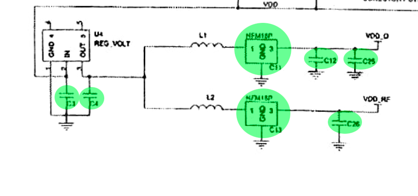
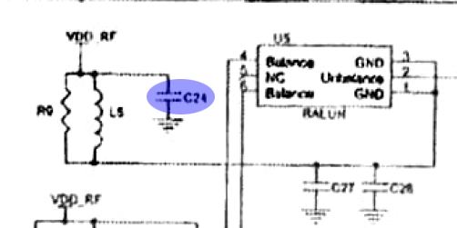
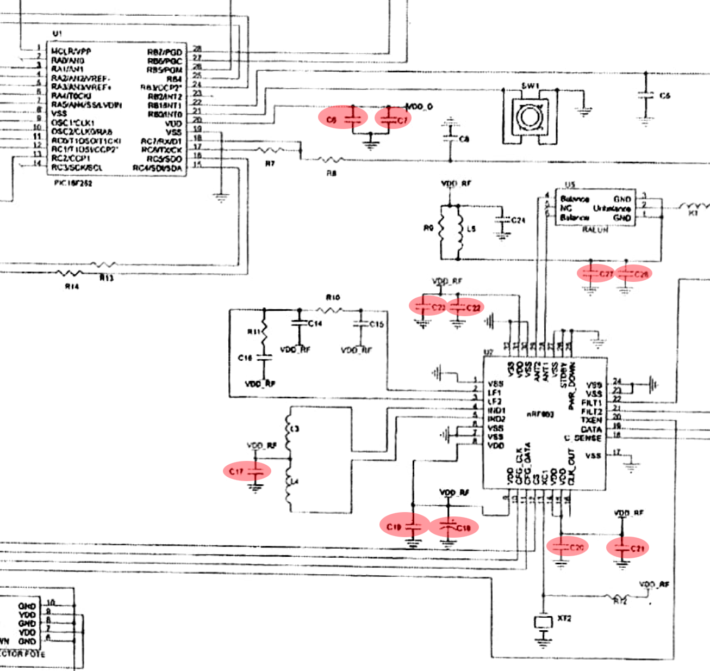

La electrónica es algo presente en nuestro día a día y que nos afecta a todos de manera inconsciente. Millones
de aparatos con ello presente en su interior. Un mundo desconocido para la mayor parte de la población.
En esta web le hablaremos del mundo de la electrónica, concretamente desde el punto de vista de la compatibilidad
electromagnética. Poniendo como ejemplo el circuito de un mando de garaje, explicaremos cómo y en base a que se
realiza la selección de capacidades. También analizaremos los tipos de capacidades que hay y su respectiva función.
Muchas de las personas ignoran su existencia, pero una vez dentro, si te gusta, resulta apasionante
Condensadores
Existen condensadores de todas las formas y tamaños. Son dispositivos capaces de almacenar energía en forma de campo
eléctrico y que se oponen a los cambios bruscos de voltaje liberando su energía almacenada rápidamente. Están formados
por dos armaduras metálicas paralelas separadas por un material dieléctrico que evita que la corriente circule
directamente entre ellas.

Además según la función que cumplan y siempre que estén conectados entre la fuente de tensión y tierra se pueden clasificar
en 3 grupos principales: Bypass, Bulk y Decouple.

Condensadores Bypass
Estos condensadores se encargan de filtrar el posible ruido producido por la fuente de alimentación y por esto serán
los más cercanos a esta.
Condensadores Bulk
Estos se colocan después de los condensadores de bypass, proporcionando los armónicos más bajos de los picos de corriente
para suministrar un voltaje y corriente estables a los componentes. Su voltaje nominal debería ser el doble que el voltaje
máximo esperado en el circuito y su capacidad suele estar típicamente entre los 10 y 100 µF.
Condensadores Decouple
Son los condensadores más cercanos a los componentes y se encargan de estabilizar el voltaje proporcionando los armónicos
más altos de los picos de corriente.
Ejemplo

Lo primero que deberemos hacer es situar la fuente de alimentación y los diversos componentes/circuitos integrados del
circuito, que en este caso son:
- Microcontrolador PIC18LF252-1/SO
- Transceptor a 868MHz nRF903
- Protección contra ESD ESDA5V3SC6
- Regulador de 5V a 3V MC78LC33NTR
- Balun para 900Hz 1:4 LDB31900M20C-416
Condensadores Bypass

Como hemos mencionado antes, estos estaran pegados a la fuente de alimentación (parte inferior del esquemático). En este caso
tendremos los condensadores C3, C4, C11, C12, C13, C25 y C26.
En el caso de C3 y C4, si leemos el datasheet del regulador de voltaje, podremos ver que el fabricante recomienda
colocar dos condensadores con un valor mínimo de 0.1 µF entre las entradas y salidas y tierra.

Sin embargo, para dar valores a C11, C12, C13, C25 y C26 no podremos acudir a ningun datasheet y tendremos que calcularlos
nosotros mismos. Aqui ya no se como seguir
Condensadores Bulk

En este circuito de ejemplo, tenemos una unica capacidad de este tipo (C24). Al igual que ocurría en el anterior caso,
deberemos calcular el valor de su capacitancia. Aqui ya no se como seguir
Condensadores Decouple

Como podemos ver estos son los mas comunes en el circuito y se encuentran por lo general agrupados al rededor de los distintos
circuitos integrados. Como su uso suele ser necesario para el correcto funcionamiento de estos componentes, por lo general
sus capacitancias vienen dadas en los datasheets de estos.
Trabajando con el transceptor tenemos a los condensadores
C17, C18, C19, C20, C21, C22 y C23. Accediendo a su datasheet y viendo
la configuración recomendada para funcionar a 868 MHz, obtenemos los siguientes valores:

| # |
CAPACIDAD |
TIPO |
| C17 |
33pF |
Cerámico |
| C18 |
4.7uF |
Tántalo |
| C19 |
4.7nF |
Cerámico |
| C20 |
33pF |
Cerámico |
| C21 |
4.7nF |
Cerámico |
| C22 |
33pF |
Cerámico |
| C23 |
4.7nF |
Cerámico |
Junto al microcontrolador, tenemos los condensadores de decouple C6 y C7 que estabilizan su alimentación. En el datasheet
no especifican los valores que debemos darles, por lo que a partir de ΔI (transition current), ΔV (DC noise margin) y Δt,
que si que podremos obtener o estimar con el datasheet, deberemos calcular la capacitancia mínima de los condensadores
dada por la expresión: Cmin=ΔI/(ΔV/Δt) . Lo que en este caso nos da una capacitancia mínima de lo que de para unos valores
de lo que sea para ΔI, ΔV y Δt respectivamente.
Finalmente, tendremos que repetir este mismo proceso para hayar los valores de los condensadores de decouple pertenecientes
al balun. Obteniendo un valor mínimo para estos de lo que de.